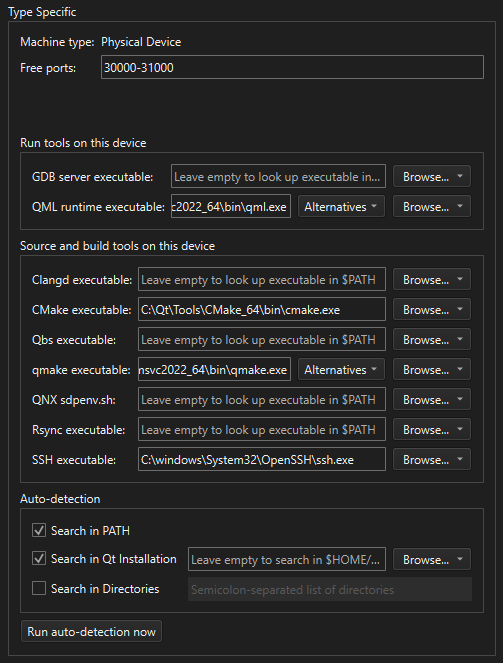

Configure development tools
Configure development tools for devices in Preferences > Devices. The available tools vary depending on the device type and enabled plugins.

Tool configuration options for a desktop device in the Devices tab in Devices preferences.
To configure tools for a device:
- Go to Preferences > Devices > Devices.
- Select an existing device from Device.
- In Type Specific > Run tools on this device or Source and build tools on this device, specify the paths to the tools.
Or, in Auto-detection, configure the auto-detection options and then select Run auto-detection now.
See also Use Qt Creator variables, How To: Build and Run, How To: Develop for Docker, and How To: Develop for remote Linux.